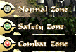

|
2001年7月16日
天堂1.63C更新
如果大家有登入天堂的話都會發現在很多檔案需要更新，而在今次的更新主要是加入了進入不同區域的提示。

在天堂中主要分為三個區域：Normal Zone（灰），Safety Zone（綠）和Combat Zone（紅），主要分別如下：
Normal Zone: 玩家可以攻擊玩家，如假殺了中立或正義屬性的人，屬性會變為邪惡，守衛會打變為紫名的玩家。
Safety Zone: 玩家不能攻擊玩家。
Combat Zone: 玩家可以攻擊玩家，在殺人後不會有屬性改變，守衛不會干涉。
在以上三個區域中，假如被敵人或守衛所殺，皆會跌經驗值及道具。
另外部分*.html檔案已經加密了，此舉有助防止玩家製造"所謂的"外掛程式，同時亦可以防止玩家利用程式漏洞來得到一些特別道具。
不過在更新過後，玩家不能在選擇角色前看到自己的剩餘時間，有關問題GM已經知道了並會盡快處理。 |